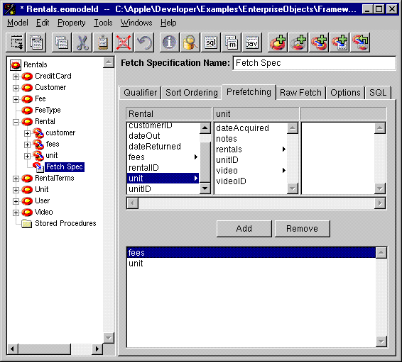
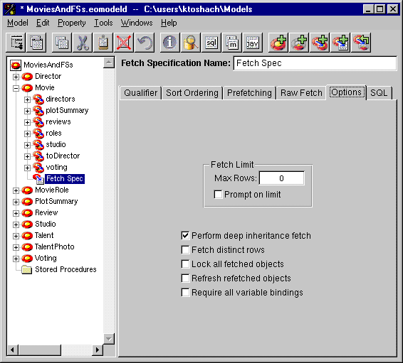

Table of Contents
Table of Contents  Next Section
Table of Contents
Next Section
Table of Contents  Previous Section
Previous Section
Although prefetching increases the initial fetch cost, it can improve overall performance by reducing the number of round trips made to the database server.
To specify a relationship to prefetch, select the relationship in the Fetch Specification Builder's browser and click Add, as shown in Figure 44.

Figure 44. Specifying Relationships to Prefetch
Use the "Prompt on limit" box to specify what the Framework should do when the fetch limit is reached. If the box is checked, the Framework prompt the user about whether to continue fetching after the maximum has been reached. If the box isn't checked, the Framework simply stops fetching when it reaches the limit.

Figure 45. The Options Tab
Other Options
The other options on the Options tabs are explained below:
Table of Contents Next Section